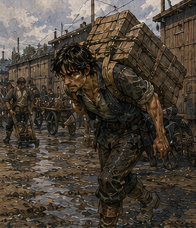

The rocks had to move. This became true before anything else. Not because they mattered. Because the lodging keeper had raised the price.
“Two copper tomorrow.”
I stopped halfway through the front room.
“What?”
“For the sack.”
“You said one.”
“I said one yesterday.”
“That is not how storage works.”
“It is how my storage works.”
“You cannot double the price because time passed.”
“I can remove the rocks.”
There. Market pressure. Terrible. I looked behind the desk. Twenty pounds of kestrin shale sat exactly where I had left it. Unchanged. Unrepentant. I had Antonius debt work in less than an hour. Pell’s workshop was in the wrong direction. Dorrin Stone was farther. Throwing it away would cost nothing and solve everything. No. I lifted the sack. My hands were mostly healed.
Mostly. The weight settled against my forearms.
“You win.”
“I know.”
I carried the rocks to work. This was not dignified. West Storehouse was already moving when I arrived. Rusk stood near the loading doors with a chalk board in one hand. He looked at the sack.
“No.”
Everyone had become predictable.
“They are mine.”
“That makes it worse.”
“I need somewhere to put them.”
“Not here.”
“I work here.”
“You owe here.”
“Related.”
“No.”
I set the sack down beside the wall. Rusk pointed at it.
“Move.”
“Where?”
“Outside.”
“It will get wet.”
“They are rocks.”
“Processed later.”
“They are not processed.”
I stared.
“How do you know?”
“You wrote Dorrin on the sack.”
Right.
“Fine.”
I moved them under the exterior awning. Temporary. Free. Excellent. Rusk handed me a pair of work gloves.
“Today you carry.”
“What?”
“You complained last time that you never know what job you have.”
“I did not.”
“You do with your face.”
Hostile.
“What am I carrying?”
“Whatever Mevi says.”
“Why?”
“Because two loaders are at south yard.”
“Why?”
“Work.”
Good. I put on the gloves. They were too large.
“Smaller?”
“No.”
“Useful.”
“Work.”
Mevi had me move sacks. Not think about sacks. Move them. From incoming pallet to dry platform. From dry platform to numbered row. Bluegrain. Barley. Something called red millet that was not red. The sacks weighed between thirty and sixty pounds. Young body. Good legs. Average technique. Bad pride. Mevi watched me lift the first heavy one.
“No.”
I froze with it halfway.
“What?”
“Put it down.”
I did.
“Why?”
“You’re lifting like a rich man.”
“I have never been rich.”
“You lift like one.”
She showed me. Not a lesson. One demonstration. Closer. Hip. Turn. Do not twist under load. Use the sack’s own sag. Let it settle against the body before moving. I copied. Better.
“Again.”
I did.
“Good enough.”
Then she left. That was all. I moved sacks.

Twenty minutes. Thirty. Sweat. Forearms. Back. No mana. No cleverness. The gloves rubbed my healing blister less than expected. One sack had a loose tie. I noticed. Tied it. Wrong knot. It slipped. I used Ossin’s millrace knot instead. Held. Good. Tiny transfer. No one applauded.
At forty minutes, a cart arrived with six narrow crates marked glass. Rusk called, “Greg.” I put down the grain sack.
“What?”
“Not you.”
Another Greg? No. A man near the cart looked up. Older. Bald. Greg. Of course. Rusk pointed at him.
“Glass row.”
Other Greg nodded. I stared. He saw.
“What?”
“Nothing.”
He was Greg too. This felt unacceptable. He carried glass. I carried grain. The world survived. At the end of the first hour, Mevi handed me water.
“Sit.”
“I can keep going.”
“Yes.”
“Then why sit?”
“Because after sitting you keep going better.”
Fine. I sat on an overturned crate. Other Greg sat two crates away.
“Greg?”
I asked.
“Yes.”
“Full?”
“Gregor.”
Relief.
“Why Greg?”
“Because people have jobs.”
Fair.
“What do you do?”
“Glass.”
“That is not a job.”
“It is today.”
I liked him. He drank. Then left before I could ask more. Excellent boundaries. I returned to grain. Debt work was supposed to be four hours. Antonius had not appeared. Good. No special function. No request. Just labor. That should have been less satisfying. It was not.
There was something clean about being told where the sack went. No ambiguity. No hidden optimization. Dry platform. Row three. Stack six. Again. Near midday, the work changed. A shipment of lamp oil arrived. Barrels. Not full-size. Half barrels. Still heavy. Two men rolled them. I was assigned wedges.
“Wedges?”
Mevi handed me six triangular blocks.
“Barrel stops.”
“I know what wedges are.”
“Good.”
My job was to put wood under round things. Bronze adventurer. Future S-class support mage. Temporal accident. Wedge boy. Fine. The unloading ramp was wet from yesterday’s rain. Not dangerous if used correctly. Everything was dangerous if used incorrectly. First barrel rolled down. Worker controlled rope. Second worker guided. I placed wedge after it settled. Simple. Second. Third. Fourth. On the fifth, the rope handler said, “Hold.”
Everyone stopped. The barrel had shifted sideways against the ramp rail. Not much. Enough that continuing would scrape the hoop. He adjusted. No Greg. Good. Sixth. Seventh. On the eighth, a cart entered the yard too fast. Horse shied at a dropped plank. Not catastrophe. Noise. The barrel guide looked away. Half second. The barrel rolled. Not free. Rope still held. But faster.
Toward his ankle. I had a wedge in my hand. Too far. Barrier. Coin-sized. Not against barrel. Against ramp edge beside the hoop. Angle. Contact. The hoop clipped it. Barrier broke immediately. Enough. Barrel shifted an inch. Guide got foot clear. Rope handler stopped it. Done. Pressure? None. Maybe half. Gone. The guide looked at me.
“Magic?”
“Yes.”
“Good.”
Then he shoved the barrel back into line. No awe. Correct. Mevi came over.
“What happened?”
“Guide looked away. Barrel moved.”
“Why?”
“Cart noise.”
She looked at the cart. Then at the ramp. Then at the barrel.
“Anyone hurt?”
“No.”
“Barrel?”
“No.”
“Good.”
She pointed at the unloading lane.
“Close that side until oil is done.”
A worker moved a rope across the entry. There. System correction. Not mine. My Barrier had bought an inch. Mevi changed traffic. Better. We finished. At midday, Rusk found me eating bread on the loading step.
“Vale says two more hours.”
“I was told four.”
“You’ve done three.”
“Yes.”
“Two more is five.”
“Yes.”
“That is why I said two more.”
“I did not agree.”
He looked at me. Fair. Debt work had terms.
“What is it?”
I asked.
“Not carrying.”
Suspicious.
“What?”
“Courier.”
“No.”
He handed me a folded receipt.
“Take this to South Weigh Office. Bring back stamped copy.”
“That is courier.”
“Yes.”
“I am an adventurer.”
“You are in debt.”
Correct.
“Why me?”
“Gregor is carrying glass.”
I looked for Other Greg. Gone. Of course.
“Fine.”
“Do not lose it.”
“I have transported civilians.”
“Paper is easier to lose.”
Also correct. I took the receipt. South Weigh Office was across half the city. Walking. Good. My body appreciated not lifting. I passed the Guild. Did not enter. Passed the turn toward Bale. Did not turn. Master available. Sinkstone question. Not urgent. Receipt. Simple. I reached South Weigh. Line. Of course. Six people. One clerk. I waited.
A woman ahead of me had three livestock permits and a chicken under one arm. The chicken hated administration. Reasonable. A man behind me carried a wheel rim. No idea why. The clerk stamped. Signed. Copied. My turn.
“West Storehouse.”
Receipt. She read.
“Wrong office.”
I stared.
“What?”
“South Weigh handles incoming south-route freight.”
“This says South Weigh.”
“It says South Weight.”
I looked. Fuck.
SOUTH WEIGHT CERTIFICATION.
Not office. A certification company.
“Where?”
“Copper Street.”
Other direction.
“How far?”
“Ten minutes.”
I left. Rusk had said South Weigh. Maybe I heard wrong. Maybe he said South Weight. Difference expensive only in walking. Fine. Copper Street. South Weight Certification occupied one room above a harness shop. I climbed. A man stamped the receipt in twelve seconds.
“Copy?”
He made one. Done. I walked back. No revelation. Thirty extra minutes because one letter. Systems. No. Hearing. At West Storehouse, Rusk took the stamped copy.
“You went to South Weigh.”
“Yes.”
He laughed.
“You said South Weigh.”
“I said South Weight.”
“You pronounce them the same.”
“No.”
“You do.”
Mevi, passing behind him, said, “He does.” Rusk looked betrayed. Good.
“Does the extra half hour count?”
“Yes.”
Excellent.
“Then I have one and a half left.”
“One.”
“You said two more after three.”
“Fine. One and a half.”
Debt accounting mattered. I returned to work. Not sacks. Inventory marks. Mevi had me chalk incoming lot numbers onto shelf boards while she read them. No thinking. Except when she read 417 and the board already said 471.
“Wait.”
She checked. Her page said 417. Board old mark 471. Different lot. We wiped it. Wrote new. No problem. Then one row had no board. I found one. Then chalk broke. I found more. Ordinary work contained infinite small failures. Most did not deserve theory. At the end, Rusk marked my debt ledger. Five hours. I watched.
“How much?”
He told me the credit. I wrote it in my own notebook. Not approximate. Antonius had infected me. Rusk looked at the rocks outside.
“Take those.”
“I was hoping you forgot.”
“No.”
“Can I store them here?”
“No.”
“Why?”
“Because then tomorrow you bring more.”
“That is unfair.”
“Yes.”
I lifted the sack. Hands tired. Back tired. Better technique. Still heavy. Pell. Finally. I carried twenty pounds of shale across Carrow. Again. This time on purpose. Pell’s workshop was open. Vessa was outside dumping gray water into the gutter. She saw me.
“No.”
I nearly dropped the sack laughing.
“Everyone says that.”
“What is it?”
“Kestrin.”
“Why?”
“I bought it.”
“That does not answer why.”
“No one accepts that answer.”
“Because it is bad.”
She held the door. I went inside. Pell was at the ceramic bench. He looked up. Looked at the sack. Then at me.
“No.”
“Fuck you.”
Vessa laughed behind me.
“I brought you material.”
“I have material.”
“Free material.”
Pell paused. Better.
“What grade?”
“Dorrin sorted visible quality. Not reaction sorted.”
“How much?”
“About twenty pounds.”
“Why?”
“Research.”
“Bad.”
“Yes.”
“Free?”
“Yes.”
He pointed at a corner.
“Put it there.”
Victory. I set it down. My arms felt suddenly absent.
“Now you own the problem.”
“No.”
“You accepted it.”
“I accepted stone.”
“Same.”
“No.”
Fine. He returned to the ceramic regulator. I could ask about Bale. Kett. Varo. I could tell him what I learned. I could ask whether he knew Bale’s house test. Instead I looked at the fixture. New brace. Not mine.
Pell and Vessa had added a second body support opposite the collar.
“You changed it.”
“Yes.”
“Better?”
“Yes.”
“How much?”
Pell handed me a page. Seven assemblies. Crack reduced. Not gone. Good. They had continued without me. Of course.
“Did my observation help?”
“Yes.”
Simple. No praise. Enough. Vessa said, “Your rocks are leaking dirt.” I looked. Small gray trail from sack seam. Pell said, “Take them back.”
“No.”
“You said free.”
“They remain free.”
“They are dirty.”
“They are rocks.”
“Outside.”
I dragged the sack to the rear awning. Pell allowed that. Barely. I had successfully transferred my storage problem to an artificer. This was perhaps my greatest achievement.
“What did you do today?” Pell asked.
“Carried things.”
He waited.
“That’s all?”
“Mostly.”
“Good.”
Again. Everyone approved of labor when it happened to me.
“I used one Barrier.”
His attention sharpened.
“For?”
“Barrel.”
“Did it work?”
“Yes.”
“Pressure?”
“No.”
“How big?”
“Coin.”
“Held?”
“Broke.”
“Then how work?”
“Changed contact angle enough to move the hoop.”
He nodded. That was all. No demand to see. No lecture. Small. Precise. Directional. Exactly what Hessa wanted. I hated when plans worked. I stayed another ten minutes. Not an hour. Pell had work. Vessa had work. I had no rocks. Excellent. Outside, late afternoon had turned warm.
I had spent five hours reducing debt, carried half the storehouse, misdelivered a receipt, used one clean Barrier, and convinced Pell to inherit twenty pounds of shale. No one had asked me to sort noise. No one had needed a special Greg function. That should have felt like regression. It did not.
Yesterday Antonius had paid me to decide which problem came first. Today Mevi had paid my debt down by telling me where to put sacks. Both were work. Different role. Same body. I walked home without carrying anything. This felt like wealth.